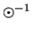
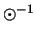
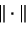

Before we can tackle any of the early vision problems we
need an expression for the posterior distribution
 ; and examine whether the posterior distribution
also has the locality property.
Using Bayes theorem Bayes rule, we have
; and examine whether the posterior distribution
also has the locality property.
Using Bayes theorem Bayes rule, we have
 is the observed image,
is the observed image,
In order to have the locality property for the posterior
distribution we need to assume that  is also Gibbsian. We
know that Gaussian distribution is a special case of
Gibbsian distribution; thus for specificity we assume that
elements of
is also Gibbsian. We
know that Gaussian distribution is a special case of
Gibbsian distribution; thus for specificity we assume that
elements of  are i.i.d Gaussian distributed with mean
are i.i.d Gaussian distributed with mean
 and variance . Consequently
and variance . Consequently
![\begin{displaymath}
P[X=x\vert Y=y] = K \exp^{ -U^{p}(x)}
\end{displaymath}](img91.gif)
|  | (8) |
To estimate other early vision
attributes, we need to appropriately modify the potential
function  , and in some cases incorporate an
additional field corresponding to the early vision attribute
like, edges, segments, etc. In fact the art lies in
selecting a good potential function.
, and in some cases incorporate an
additional field corresponding to the early vision attribute
like, edges, segments, etc. In fact the art lies in
selecting a good potential function.